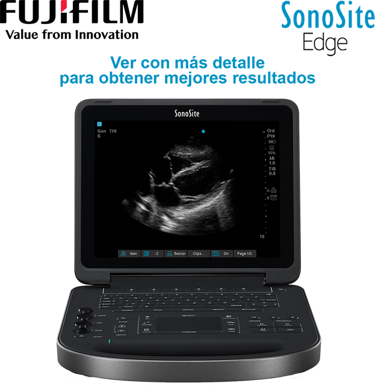

Sonosite Edge
Ultrasonido de 5a. generación potencia sin precedentes

Registro Sanitario: 1559E2014 SSA
DESCRIPCIÓN:
La calidad del sistema de ecografía EDGE de imagen mejorada ayuda a su confianza en el diagnóstico. El núcleo sólido de aluminio ayuda a proteger su inversión a largo plazo. Y un teclado de silicona resistente a salpicaduras hace la limpieza y desinfección mucho más sencilla. Con el sistema de ecografía EDGE, usted tiene una nueva generación de visualización ecográfica en el punto de atención al paciente.
Tecnologías SONOSITE:
SonoADAPT: Optimización de tejidos. Elimina la manipulación complicada de múltiples controles.
SonoHD: Es el resultado de la combinación del aumento del poder de procesamiento y de imagen realzada por algoritmos que reducen el ruido en la imagen mientras se mantiene y define la información del tejido.
SonoMB: Es una técnica propietaria de imágenes compuestas que utilizan el manejo electrónico de la angulacion de los haces del ultrasonido para rápidamente adquirir escaneos superpuestos de un objeto desde diferentes líneas de visión.
Visualización avanzada de la aguja: Software que mejora las estructuras lineales dentro de un intervalo de ángulos seleccionado en el plano de la ecografía.
Tecnologia coloHD: Incrementa valores como potencia de color, sensibilidad y velocidad del cuadro brindando mayor información diagnóstica.
CARACTERÍSTICAS:
- Pantalla LCD de alta resolución, medidas 12.1”/30.7 cm.
- Calidad de imagen mejorada.
- Amplia gama de usos en imagen clínica.
- Teclado de silicón sellado y resistente a salpicaduras.
- Núcleo de aluminio sólido y carcasa de magnesio que proporciona una máxima durabilidad.
|
Aplicaciones de Point Of Care |
|
|
|
EDGE |
|
Anestesia |
|
|
Medicina crítica |
|
|
Cardiología |
|
|
Urgencias |
|
|
Músculo-esquelético |
|
|
Ginecología y obstetricia |
|
|
Radiología |
|
|
Vascular |
|
|
Salud de la mujer |
|
DATOS COMPLEMENTARIOS: En FUJIFILM de México queremos convertirnos en su mejor aliado, es por eso que estamos comprometidos con nuestros clientes y ofrecemos el mejor servicio posventa.
FUJIFILM DE MÉXICO, S.A. de C.V.
Teléfono: (55) 5263-5500
e-mail: ultrasonido@fujifilm.com.mx
www.fujifilm.com.mx